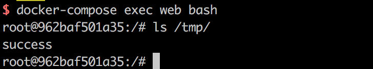
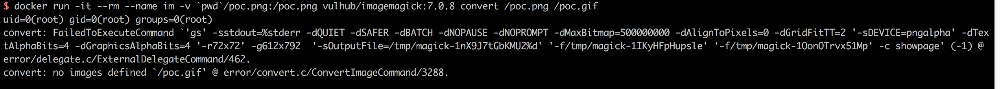

GhostScript Sandbox Bypass Command Execution (CVE-2018-16509)¶
GhostScript is a suite of software based on an interpreter for Adobe Systems' PostScript and PDF page description languages. It is widely used by many image processing libraries such as ImageMagick and Python PIL.
On August 21st, 2018, security researcher Tavis Ormandy disclosed that GhostScript's security sandbox could be bypassed through maliciously crafted image content, leading to command execution, file reading, and file deletion vulnerabilities.
References:
- http://seclists.org/oss-sec/2018/q3/142
- https://bugs.chromium.org/p/project-zero/issues/detail?id=1640
Environment Setup¶
Execute the following command to start a vulnerable environment (including GhostScript 9.23 and ImageMagick 7.0.8):
docker compose up -d
After the server is started, visit http://your-ip:8080 to see an upload component.
Vulnerability Reproduction¶
Upload poc.png to execute the command id > /tmp/success && cat /tmp/success. Enter the container using docker compose exec web bash, and you will see that /tmp/success has been created.
{kind=link}

You can also test this vulnerability using the command line:
docker run -it --rm --name im -v `pwd`/poc.png:/poc.png vulhub/imagemagick:7.0.8-10 convert /poc.png /poc.gif
The command execution result shows that the id command has been successfully executed.
